Service Management and Interoperability Standards
Beyond writing code, ECHOES components must be managed as services that are maintained, monitored, and evolved over time. This page provides practical guidance on adopting lightweight service management frameworks, managing dependencies and APIs for reliability and interoperability, and using event-driven architecture and standardized messaging patterns for loosely coupled workflows.
Adopting Service Management Frameworks
Service management frameworks provide structured approaches to delivering and maintaining IT services. For research projects, full ITIL adoption may be unnecessarily heavyweight. Lightweight alternatives such as FitSM (tailored for research and education environments) can provide practical structure with lower overhead.
Core Service Management Principles
| Principle | What It Means in Practice | Typical Outputs / Artifacts |
|---|---|---|
| Service catalog | Maintain an inventory of available services and their purpose | Service catalog page; service owners; service boundaries |
| Service level objectives (SLOs) | Define expected availability and performance targets | SLO definitions; monitoring dashboards; alert thresholds |
| Change management | Control and document how changes are introduced to reduce disruption | Change log; approval rules; release notes; rollback plan |
| Incident management | Handle incidents consistently and traceably | Incident process; escalation paths; post-incident reviews |
| Continuous improvement | Regularly review service quality and implement improvements | Improvement backlog; retrospectives; user feedback loop |
FitSM for Research Projects
FitSM is a lightweight service management standard designed specifically for research and education IT services. It provides a practical structure across the service lifecycle:
| FitSM Area | Purpose | Example Evidence (Lightweight) |
|---|---|---|
| Service planning | Define what services will be delivered | Service roadmap; scope statement; resourcing assumptions |
| Service design | Design services to meet requirements | Architecture notes; security considerations; SLO draft |
| Service delivery | Operate and maintain services | Runbooks; deployment procedures; on-call/support rotation |
| Service assurance | Monitor and improve service quality | Monitoring/alerts; incident metrics; periodic review notes |
Application to ECHOES
| Practice | What to Do | Outcome |
|---|---|---|
| Document service descriptions and responsibilities | Assign service owner(s); define service boundaries; publish a short description | Clear accountability; easier onboarding and support |
| Define support procedures | Provide intake channels, triage rules, escalation, response expectations | Predictable user experience; faster resolution |
| Establish monitoring and reporting | Define basic metrics and alerting; periodic status reporting | Improved reliability; earlier detection of issues |
| Create improvement cycles based on user feedback | Capture feedback; maintain improvement backlog; review periodically | Continuous service maturity; better alignment with users |
Minimum Documentation Requirements
Each service should have a minimum documentation set to ensure operability and supportability:
| Document Element | Required Content | Notes / Examples |
|---|---|---|
| Service description | What it does; who it is for; key features; service owner | Keep to 0.5–1 page; link to user docs |
| Operational procedures | How to deploy, update, restart, scale; dependencies | Include step-by-step runbook and rollback |
| Support contacts | Who to contact; hours; escalation path | Include on-call rotation if applicable |
| SLOs/SLAs | Availability target; performance targets; support response targets | Prefer SLOs; SLAs only if contractually needed |
| Known issues and workarounds | Current limitations; mitigations; planned fixes | Keep current; link to issue tracker |
| Maintenance windows | When updates occur; expected impact; notification approach | Define communication template and lead time |
!!! tip "Keep It Lightweight" Documentation should be sufficient for operation and handoff, but avoid creating bureaucracy. A well-maintained README, runbook, and service catalog entry are often sufficient for research projects.
Managing Dependencies and APIs for Interoperability
Cultural heritage cloud services rarely operate in isolation. They depend on external APIs, databases, authentication services, and other components. Managing these dependencies carefully is essential for reliability and interoperability.
Dependency Management Strategies
Version Pinning and Compatibility
Dependencies should be managed with explicit version constraints to ensure predictable behavior across environments.
Key practices:
- Specify exact or minimum versions for all dependencies
- Use lock files to freeze the entire dependency tree
- Test compatibility in non-production environments before upgrading
- Document and communicate breaking changes clearly
!!! info "Why It Matters" Version pinning prevents unexpected breakages when libraries update and ensures all environments use identical versions.
Graceful Degradation
Services should remain partially functional when dependencies become unavailable rather than failing completely.
Implementation approach:
- Provide meaningful error messages explaining what is affected and why
- Offer degraded functionality where possible (cached data, static content)
- Log all dependency failures for investigation
- Design to prevent cascading failures
!!! info "Why It Matters" One service's failure should not bring down the entire system; users get partial functionality instead of total outage.
Circuit Breakers
Circuit breakers prevent repeated calls to failing services, protecting both the caller and the failing dependency.
How they work:
- Closed state: Normal operation, requests pass through
- Open state: After repeated failures, immediately return errors without attempting calls
- Half-open state: After timeout, allow test requests to check if service recovered; return to closed if successful, reopen if it fails
!!! info "Why It Matters" Prevents wasted resources on calls that will fail and gives failing services time to recover.
Timeouts and Retries
Every external call needs timeout and retry policies to handle both transient and permanent failures.
Configuration principles:
- Set timeouts based on expected response times plus network margin
- Implement retry with exponential backoff for transient failures
- Do not retry permanent errors (authentication failures, invalid requests)
- Limit retry attempts and add jitter to prevent synchronized retry storms
!!! info "Why It Matters" Prevents requests from hanging indefinitely while handling temporary network issues appropriately.
Monitoring Dependencies
Track dependency health proactively to catch problems early.
What to Monitor
- Response times — Increasing times signal problems before failures
- Error rates — Rising errors indicate degraded service quality
- Availability patterns — Identify recurring issues
Alerting Strategy
- Set thresholds based on error rates and response time percentiles
- Provide context: which dependency, severity, affected services
- Escalate critical dependencies faster than optional ones
Dependency Mapping
- Document which services depend on which others
- Identify critical paths where failures have cascading impact
- Use maps to prioritize reliability improvements
Fallback Plans
- Document alternatives for critical dependencies
- Options: backup services, cached data, degraded functionality
- Test fallback procedures regularly to ensure they work when needed
Event-Driven Architecture and Standardized Messaging Protocols
For complex workflows and loosely coupled systems, event-driven architecture provides flexibility and scalability. Instead of services calling each other directly, they emit and respond to events.
Benefits of Event-Driven Architecture
| Benefit | Description | Impact |
|---|---|---|
| Loose coupling | Services do not need to know about each other's existence or location | Easier to add, remove, or modify services independently |
| Scalability | Events processed asynchronously, allowing independent scaling | Handle traffic spikes by adding more event consumers |
| Resilience | Temporary failures do not block the entire workflow | System continues operating even when individual services fail |
| Auditability | Event logs provide complete history of all changes | Full traceability for compliance and debugging |
Messaging Patterns
Publish–Subscribe
Services publish events to topics; interested services subscribe.

When to use:
- Multiple services need to react to the same event
- Services should remain unaware of each other
- New subscribers can be added without modifying publishers
Example scenario: When a cultural heritage object is updated, the indexing service updates the search index, the notification service alerts curators, and the analytics service records the change—without the metadata service needing to know about these consumers.
Message Queues
Work items are placed in queues and processed by workers.
When to use:
- Tasks need guaranteed processing (at-least-once delivery)
- Work should be distributed across multiple workers
- Processing can be asynchronous (not real-time)
Example scenario: Digitization pipeline where image processing tasks are queued and distributed across multiple worker nodes for parallel processing.
Event Sourcing
All changes are stored as a sequence of events rather than just current state, providing complete audit trail and ability to reconstruct state at any point in time.
Example event store:
- Event 1: Object created:
obj-12345 - Event 2: Title updated:
"Medieval Manuscript" - Event 3: Metadata enriched: added date field
- Event 4: Access rights changed: public → restricted
- Event 5: Annotation added by curator
When to use:
- Complete audit history is required
- Need to reconstruct past states
- Temporal queries ("what did this object look like in 2023?")
- Compliance and provenance tracking
!!! info "Why It Matters for Cultural Heritage" Tracking the complete history of object metadata changes is often essential for scholarly research and institutional accountability.
Recommended Technologies
| Technology | Use Case | Protocol |
|---|---|---|
| RabbitMQ | General message queuing | AMQP |
| Apache Kafka | High-throughput event streaming | Kafka protocol |
| Redis Pub/Sub | Lightweight messaging | Redis protocol |
| MQTT | IoT and lightweight messaging | MQTT |
Event Schema Standards
Define clear, consistent schemas for all events to ensure interoperability.
Required Fields for All Events
event_id: Unique identifier for this eventevent_type: Categorized event name (e.g.,object.created,metadata.updated)timestamp: When the event occurred (ISO 8601 format)source: Which service generated the eventdata: Event-specific payload
Example Event Structure
{
"event_id": "evt-abc123",
"event_type": "object.created",
"timestamp": "2024-01-15T14:30:00Z",
"source": "metadata-service",
"data": {
"object_id": "obj-12345",
"collection": "medieval-manuscripts",
"metadata_url": "https://api.echoes.eu/objects/obj-12345"
}
}
Event-Driven Architecture Best Practices
Schema Governance
- Document all event types in a shared registry to maintain consistency across services
- Version event schemas when making breaking changes to prevent consumer disruption
- Use semantic event names following the
verb.nounpattern (e.g.,object.created,metadata.updated) - Include correlation IDs to trace related events across services and enable end-to-end request tracking
Event Design Best Practices
- Keep events small and focused following the single responsibility principle
- Include sufficient information for consumers to act without requiring additional queries to other services
- Avoid including sensitive data in events that are broadcast to multiple subscribers
- Use standard timestamp formats (ISO 8601) and timezone (UTC) for consistency
Implementation Considerations
Ordering and Idempotency
Events may arrive out of order or be delivered multiple times in distributed systems. To handle this:
- Design consumers to be idempotent so that processing the same event twice produces the same result
- Use sequence numbers or timestamps when event order is critical to business logic
Error Handling
Implement robust error handling to ensure reliability:
- Ensure failed event processing does not lose messages through proper retry mechanisms
- Implement dead-letter queues for events that repeatedly fail processing after exhausting retries
- Log processing failures with sufficient context including event details, error messages, and stack traces for effective debugging
Monitoring
Establish comprehensive monitoring to maintain system health:
- Track event publication rates and consumption lag to identify performance issues
- Alert on growing backlogs when consumers are falling behind producers
- Monitor dead-letter queues for systematic processing failures that may indicate code bugs or infrastructure problems
!!! tip "Start Simple" Begin with basic pub-sub patterns before implementing complex event sourcing. Event-driven architecture can be adopted incrementally as your needs grow.